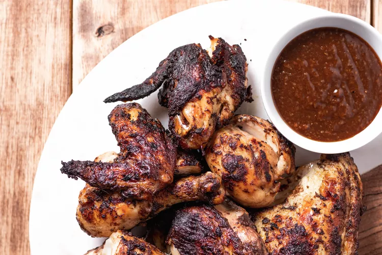

Plentiful spices and potent Scotch Bonnets pack a punch in this Jamaican jerk chicken recipe.
Jerk is a cooking method traditionally used in throughout the Caribbean and often associated with Jamaica in particular. Spices coat chicken—or beef, pork, seafood, and even vegetables—that's cooked slowly over a fire. The method may have started with the Taino, the indigenous people of the Caribbean, in the 15th century as a way to preserve meat (the word jerk is related to jerky). It's believed they taught the method to African slaves who adapted it. That adaptation became the Caribbean residents' method today to make jerk chicken.
Put the vinegar, rum, hot peppers, onion, green onion tops, thyme, olive oil, salt, pepper, allspice, cinnamon, nutmeg, ginger, and molasses into a blender. Pulse until mostly smooth.
Place the chicken in a large freezer bag, or in a large non-reactive bowl or baking dish. Pour lime juice over the chicken and coat well. Rub the jerk paste over the chicken pieces and coat well (it helps to use gloves!). Seal the bag or cover the chicken in the pan with plastic wrap. Refrigerate overnight.
When you are ready to cook the chicken, remove chicken from the marinade bag or pan. Put the remaining marinade into a small saucepan. Bring to a boil, reduce heat and simmer for 10 minutes. Set aside to use as a basting sauce for the chicken.